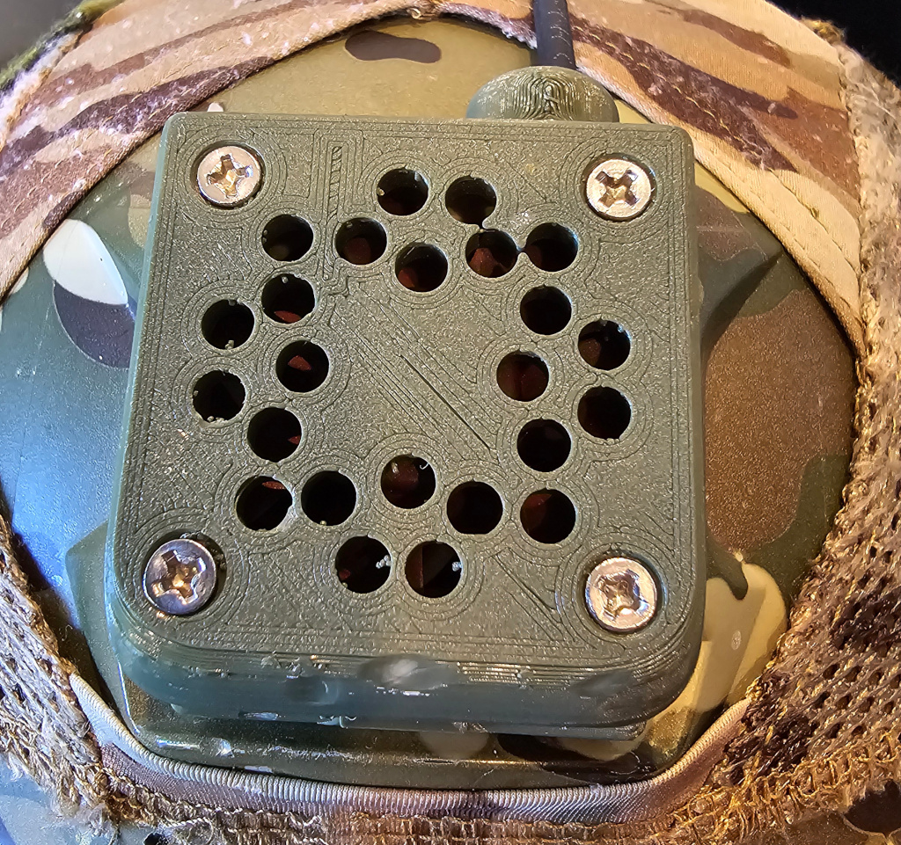

Q-Prop Creations
NVG mount fan
A fan that fits into the NVG shroud on my helmet, blowing air into the helmet through a hole in teh outer and liner.
Keeps me a little cooler and helps keep teh fog at bay
